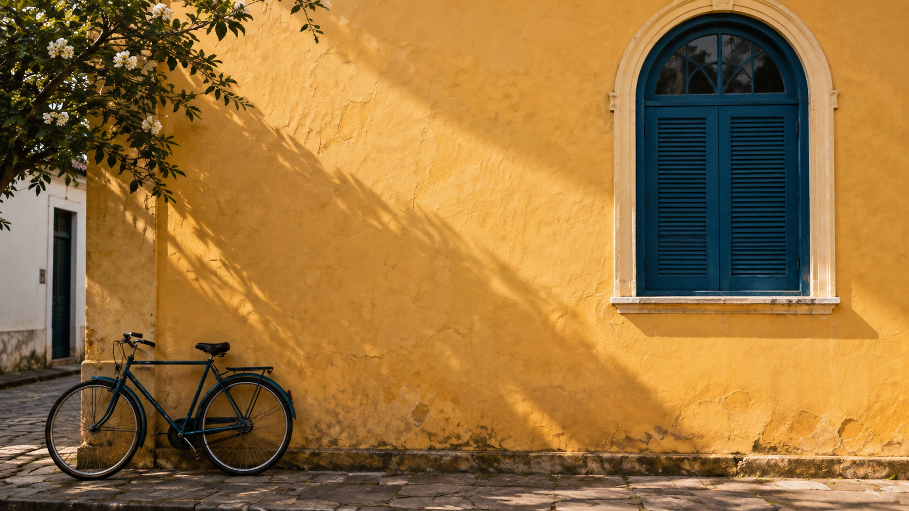

Kit Luz de Rua
Imagem fonte e roteiro para montar suas quatro peê§as.
salvar sê³ a imagem PNG ê· salvar o roteiro


Se o navegador abrir a imagem, use Salvar imagem como. Depois, no Figma, use File ê¢â â Place image ou arraste o arquivo salvo para o quadro.
Roteiro para consultar
LUZ DE RUA ê¢â¬â KIT DIDêÂTICO Caso fictêÂcio, sem endereê§o, data ou inscriê§ê£o reais. Imagem fonte: fachada.png, criada pelo recurso de imagens nativo do Codex. Nê£o representa um local ou passeio documentado. Uma pê¡gina no Figma, quatro quadros de 1080 por 1350. Margem inicial: 64. Intervalo inicial entre textos: 24. Ajuste pela leitura. TêÂtulo: Inter Bold, 64, altura de linha 72. SubtêÂtulo: Inter Regular, 32. Assinatura: Inter Regular, 28. Fundo claro #F7F1E6; azul petrê³leo #173B46; acento ocre #C58B35. O acento nê£o estê¡ automaticamente aprovado para texto. Confira cada combinaê§ê£o. 00-Capa: Luz de Rua SubtêÂtulo: Aprenda a observar a cidade. 01-Luz: Olhe a luz SubtêÂtulo: Observe onde a sombra termina e a luz comeê§a. 02-Detalhe: Escolha um detalhe SubtêÂtulo: Aproxime o olhar de uma textura, forma ou contraste. 03-Serie: Monte sua sê©rie SubtêÂtulo: Reêºna trêªs registros com uma escolha visual em comum. Assinatura das quatro peê§as: Exemplo didê¡tico. Use a mesma imagem fonte com recortes diferentes. Preserve o arco na capa. Guarde versêµes antes de testar efeitos. Exporte quatro PNGs em 1x. Confira cada PNG fora do editor. Guarde tambê©m a cê³pia .fig do seu arquivo, a imagem fonte e uma nota com data e endereê§o do arquivo online. Este kit nê£o contê©m um arquivo .fig nem uma sê©rie pronta feita no Figma.